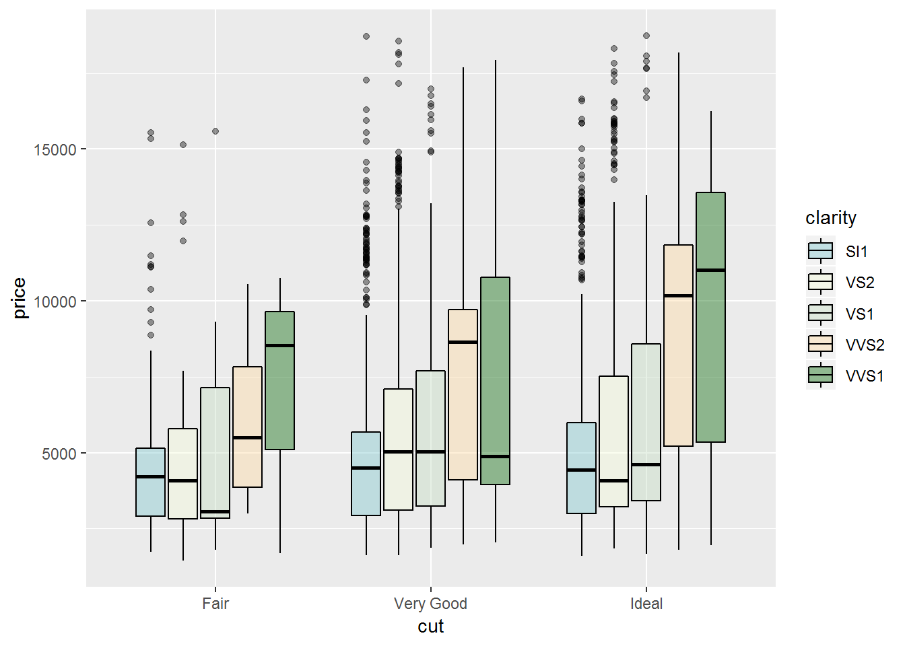
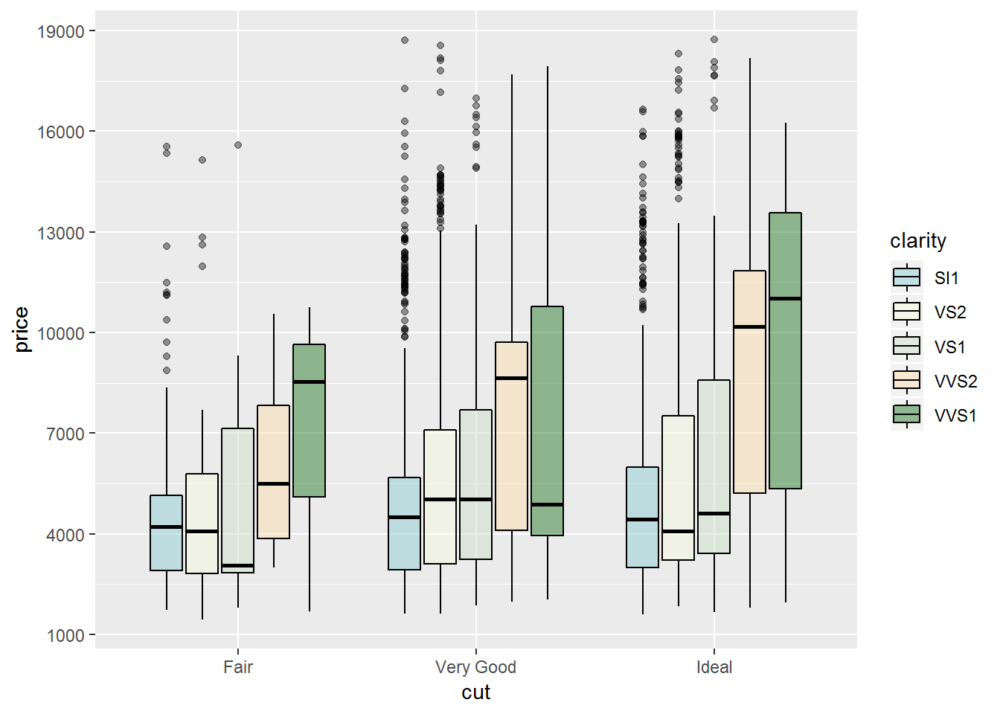
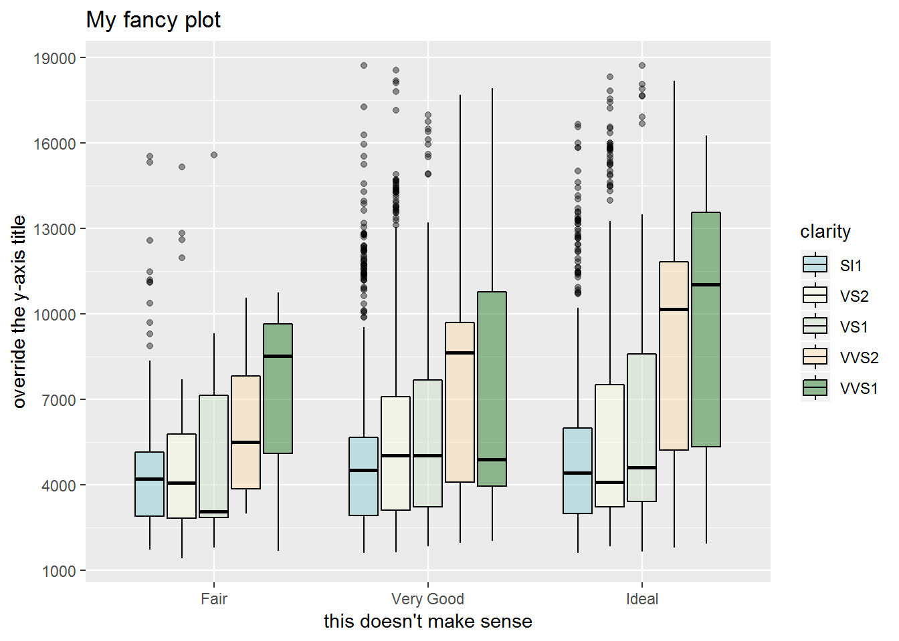
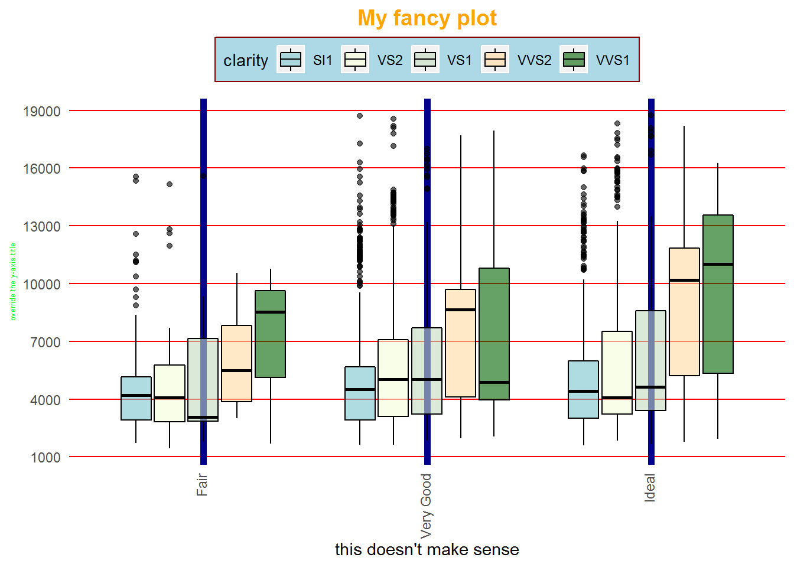

3.3 Customisation
ggplot has picked some colours to fill the bars with, but we can easily specify our own colours using either their names our hex code. We just add another layer to our lasagna.
diamonds_small %>%
ggplot(aes(x = cut, y = price, fill = clarity)) +
geom_boxplot(colour = "black", alpha = .4) +
scale_fill_manual(values = c("cadetblue3", "#F4FDD9", "#C3DBC0", "#FFDAA0",
"dark green"))
With the same logic, we could custom the breaks of our y-axis:
diamonds_small %>%
ggplot(aes(x = cut, y = price, fill = clarity)) +
geom_boxplot(colour = "black", alpha = .4) +
scale_fill_manual(values = c("cadetblue3", "#F4FDD9", "#C3DBC0", "#FFDAA0",
"dark green")) +
scale_y_continuous(breaks = seq(1000, 19000, 3000))
Why not use different titles?
diamonds_small %>%
ggplot(aes(x = cut, y = price, fill = clarity)) +
geom_boxplot(colour = "black", alpha = .4) +
scale_fill_manual(values = c("cadetblue3", "#F4FDD9", "#C3DBC0", "#FFDAA0",
"dark green")) +
scale_y_continuous(breaks = seq(1000, 19000, 3000)) +
labs(title = "My fancy plot", y = "override the y-axis title",
x = "this doesn't make sense")
With theme(), we can change a lot about our plots appearance. Check out these changes:
diamonds_small %>%
ggplot(aes(x = cut, y = price, fill = clarity)) +
geom_boxplot(colour = "black", alpha = .6) +
scale_fill_manual(values = c("cadetblue3", "#F4FDD9", "#C3DBC0", "#FFDAA0",
"dark green")) +
scale_y_continuous(breaks = seq(1000, 19000, 3000)) +
labs(title = "My fancy plot", y = "override the y-axis title",
x = "this doesn't make sense") +
theme(legend.position = "top",
legend.background = element_rect(fill = "light blue", colour = "dark red"),
plot.title = element_text(face = "bold", colour = "orange", size = 14,
hjust = .5),
axis.text.x = element_text(angle = 90, hjust = 1, vjust = .3),
axis.ticks = element_blank(),
axis.title.y = element_text(size = 5, colour = "green"),
panel.grid.major = element_line(colour = "dark blue", size = 2),
panel.grid.major.y = element_line(colour = "red", size = .5),
panel.background = element_blank())